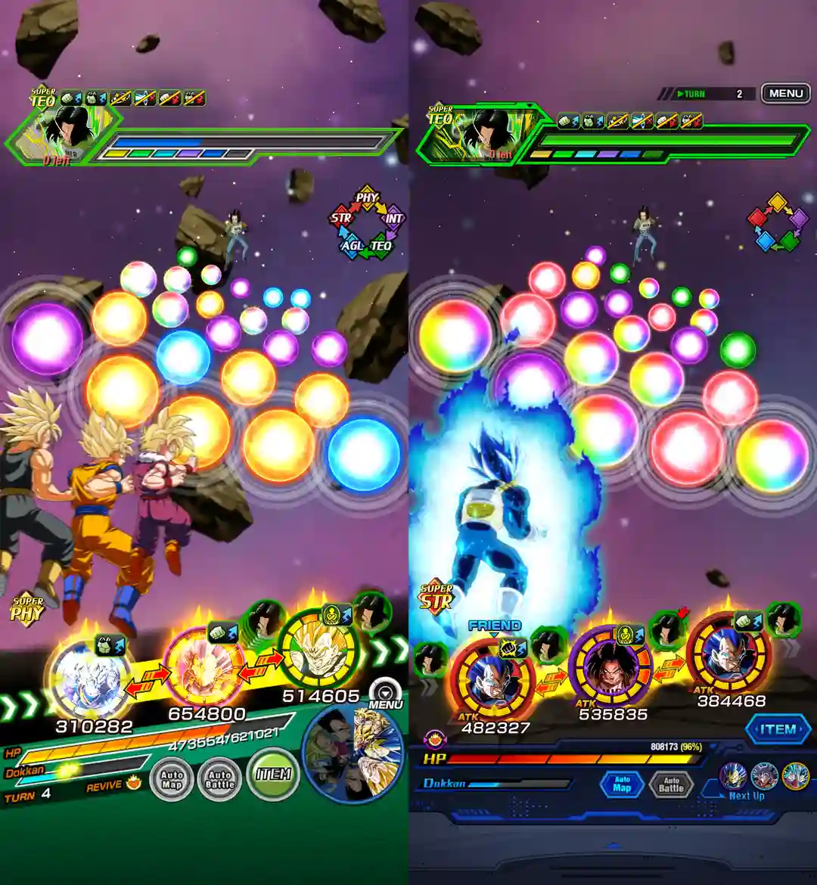
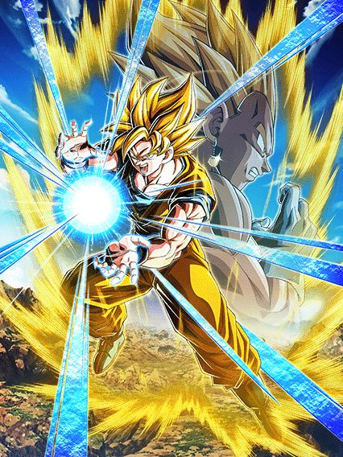
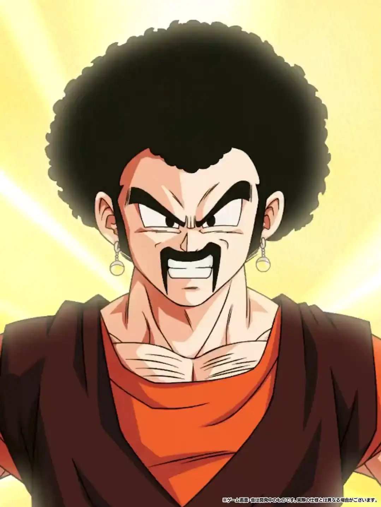
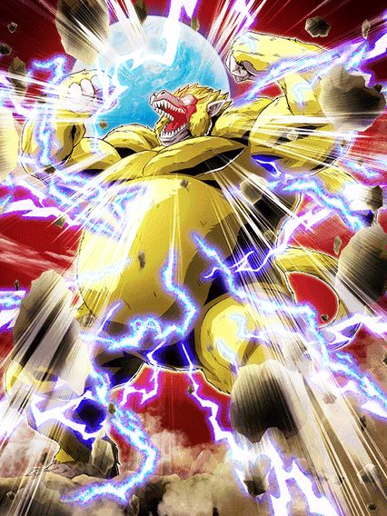

O mais grandioso aniversário da história.
Parabéns, Dokkan.
O mais grandioso aniversário da história.
Parabéns, Dokkan.

Uma das maiores atualizações de todas.
A atualização 5.25.0 trouxe diversas novidades pro Dokkan, incluindo novos ícones de loading e uma nova aba de eventos só para eventos difíceis
Mas com certeza a maior atualização foi no visual das batalhas

Um visual totalmente repaginado, com novos ícones de batalha, porcentagem na barra de HP, animações de sprite novas, novas animações de ataques básicos e muito mais
Apesar de ser no geral apenas uma atualização visual, as mudanças foram tão impressionantes que a comunidade nomeou a atualização de "Dokkan 2", por simplesmente fazer o Dokkan parecer um novo jogo.

Além de ter uma nova Leader Skill de 250% de HP e 220% de ATK e DEF pras categorias, esse também é o primeiro card onde você pode livremente trocar entre Goku e Vegeta a partir do turno 4
O Goku é similar aos GT Boys do Oitavo Aniversário, stackando 50% de ATK no Ultra SA e 30% no SA
Nos primeiros 3 turnos ele tem 90% de redução de dano nos slots 2 e 3, que cai para apenas 40% depois
Além disso, ele dá suporte de Ki e 40% de DEF pra Earth-Protecting Heroes e Potara
 + Super Saiyan Goku")
O Vegeta é o oposto do Goku, stackando DEF em ambos Supers, mudando o suporte pra 40% de ATK e tendo Defesa Ativa e 70% de redução de dano no slot 1
Ambos Goku e Vegeta tem Active Skills diferentes, onde na Active do Vegeta eles quebram os Potara e ganham +18% de ATK e DEF e Defesa Ativa permanente
E caso você use a Active do Goku..

O Vegetto dura apenas 4 turnos, e 1 turno já é o suficiente pra ele humilhar todas as lutas 💀
O cara tem Defesa Ativa, 60% de redução de dano, scouter, suporte de 40% de ATK e DEF, lança um Ultra SA adicional..
Ele é a combinação perfeita entre o Gohan Beast LR e qualquer personagem de counter, já que ele ganha mais ATK a cada golpe que leva, tem uma Active que atraí todos os golpes pra ele e countera todos eles enquanto tem as melhores animações do jogo
É bem óbvio que com os stacks do Goku e do Vegeta esse cara é invencível enquanto os counters dele derretem qualquer boss.

O melhor SSR secundário de todos?
Esse cara dá Ki e 50% de ATK e DEF pra Earth-Protecting Heroes, tem 90% de redução de dano pra 1 golpe por turno e depois de levar esse golpe tem 85% de chance de desvio
Como se não bastasse isso, ele tem uma das melhores OSTs do jogo e uma das Actives mais insanas

Convidaram a melhor fusão pro aniversário.
")
Esse cara já começa sendo ridiculamente quebrado, tendo 70% de chance de desvio e Defesa Ativa por 4 turnos
Além disso, ele ainda tem um bom dano, defesa aceitável e dá suporte de 50% de DEF pra Power Beyond Super Saiyan
Você pode se transformar em Oozaru quando estiver abaixo de 70% de HP ou simplesmente a partir do turno 5

A sprite atualizada desse cara tampa até os orbs na tela 💀
Essa é uma transformação gigante comum com o mesmo jeito das outras e o bug de impedir o boss de dar super, nada demais
A transformação só dura 1 turno, e assim que acabar ele se transforma em SSJ4

Esse cara dá 70% de DEF e 10% de redução de dano pra Giant Ape Power e Power Beyond Super Saiyan, oq já torna ele insano
Junto desse suporte, ele ainda dá 44% de ATK e DEF pra todos aliados por 2 turnos no Ultra SA, e stacka 20% de ATK e DEF em ambos Supers
Além de tudo, ele ainda cura HP, tem SA adicional com 24 de Ki, chega a 100% de chance de crítico, tem Defesa Ativa.. simplesmente peak.

2024 foi o ano do Vegeta, 2025 não é.
Esse cara é similar ao Goku Black Rosé PHY do ano passado, precisando de muitas orbs pra lançar vários adicionais com chances horríveis de serem Super Attacks 💀
Ele tem 30% de redução de dano por 6 turnos, e cada golpe feito no turno dá 7% de redução temporariamente
O grande problema do Vegeta é ele precisar lançar 6 SAs pra ter mais redução de dano, sendo que os adicionais dele tem apenas 30% de chance de serem Supers
Junta isso com a falta de novas animações e o fato do Vegeta não ter uma Active Skill e você tem um card com ótimo dano e boa defesa, mas muito problemático.

O rei dos counters ressurge.
Bro tem 40% de redução de dano base e +40% apenas para ataques básicos, builda crítico, ATK e DEF tomando alguns golpes e até dá um pouquinho de suporte defensivo pro time também
Ele até ganha Defesa Ativa se estiver abaixo de 50% de HP, mas não dá pra contar com isso sempre né
Em geral, ele infelizmente é vítima de Super Attacks, mas o dano dele é ridiculamente bom e o novo Vegetto ajuda ele bastante.
Esqueceram de balancear esse aqui.
O Buuhan tem um monte de mecânicas de graça pq sim, lançando um SA adicional, mudando orbs pra rainbow e dando suporte sem condição nenhuma
Como se não bastasse, ele é um nuker que ganha 40% de ATK, 30% de DEF e cura HP por orb pega
E pra completar, ele ainda chega a 66% de redução de dano e crítico garantido pegando apenas 3 rainbow orbs
O melhor SEZA sem competição nenhuma.

O Gogeta é um personagem de muito dano e suporte, tendo um SA adicional garantido e dando Ki e 40% de ATK pra todos aliados se estiver nos slots 2 ou 3
O maior erro dele é ganhar apenas 30% de redução de dano temporariamente no turno, juntamente com ter 70% de chance de ter Defesa Ativa contra inimigos Super Class (pelo menos é garantida contra Extreme Class)
Ele também precisa de rainbow orbs pra ter mais ATK e chance de crítico.. mas ele não cria rainbow orbs 💀
Ele certamente não ficou ruim, mas ele não chega nem perto de ter sido o deus que ele já foi.

Desvia-ou-morre, mas competente
O Janemba tem Defesa Ativa e 90% de chance de desvio no slot 1, o que já é muito forte
Pós-super a chance de desvio cai pra 70%, mas aí ele já ganhou um pouco de defesa, então tá tudo certo
Similar ao Gogeta, o Janemba dá Ki e 40% de DEF pra todos aliados estando nos slots 1 ou 3
Não é um personagem de dano, mas que certamente consegue se manter no slot 1 e ajudar o time.
Você chegou ao fim dessa página!
Bom.. por enquanto né, a celebração tá acontecendo agora e tals..
Obrigado por ler tudo, e fica a vontade pra ver outras